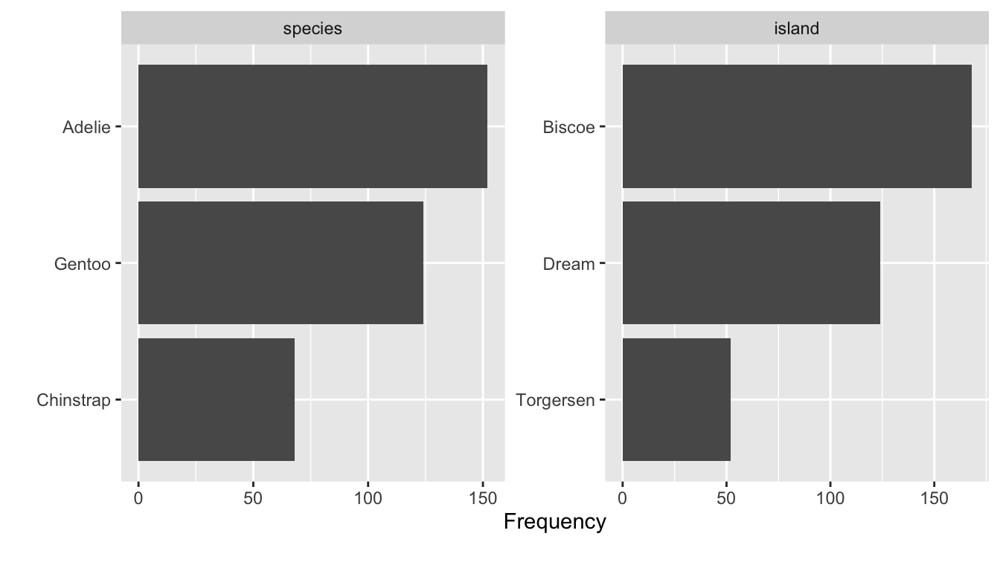

# Tutorial 03: Explore data
library(dplyr)
library(GGally)
library(summarytools)
library(skimr)
library(palmerpenguins)
library(visdat)2 Data Exploration
Welcome to the data exploration tutorial of the Practice R book (Treischl 2023). Practice R is a text book for the social sciences which provides several tutorials supporting students to learn R. Feel free to inspect the tutorials even if you are not familiar with the book, but keep in mind these tutorials are supposed to complement the Practice R book.

In this tutorial we recapture the most important functions to explore data, but this time you will explore the palmerpenguins package and the penguins data (Horst, Hill, and Gorman 2022). The latter contains information about three different penguins species (Adélie, Chinstrap, and Gentoo) and Allison Horst has made some wonderful illustrations of them. Click on the hex sticker to inspect the package website.

The tutorial has the same structure as Chapter 3: We explore categorical variables, continuous variables, and effects. Before we start with variables, it is always a good idea to explore the data in general terms. First, I assigned the data as df, which makes it possible for us to recycle a lot of code from Chapter 3. Next, explore which variables does the penguins data contain. Use the glimpse() or the str() function for a first look of the penguins data. The glimpse() function is loaded via the dplyr package, but comes from the pillar package (Müller and Wickham 2022).
# Use glimpse, head, or the str function for a first look
df <- penguins
glimpse(df)#> Rows: 344
#> Columns: 8
#> $ species <fct> Adelie, Adelie, Adelie, Adelie, Adelie, Adelie, Adel…
#> $ island <fct> Torgersen, Torgersen, Torgersen, Torgersen, Torgerse…
#> $ bill_length_mm <dbl> 39.1, 39.5, 40.3, NA, 36.7, 39.3, 38.9, 39.2, 34.1, …
#> $ bill_depth_mm <dbl> 18.7, 17.4, 18.0, NA, 19.3, 20.6, 17.8, 19.6, 18.1, …
#> $ flipper_length_mm <int> 181, 186, 195, NA, 193, 190, 181, 195, 193, 190, 186…
#> $ body_mass_g <int> 3750, 3800, 3250, NA, 3450, 3650, 3625, 4675, 3475, …
#> $ sex <fct> male, female, female, NA, female, male, female, male…
#> $ year <int> 2007, 2007, 2007, 2007, 2007, 2007, 2007, 2007, 2007…Thus, there are several factor variables such as penguin’s species or island; numerical variables such as bill (bill_length_mm) and flipper length (flipper_length_mm); and integers such as the year variable. Keep in mind that R packages come with help files that show us how functions work and they provide more information about data. Use the help function (?penguins) if you feel insecure about the content of the data.
2.1 Categorical variables
We started to explore categorical variables in Chapter 3 and I outlined a few basics about factor variables. Suppose we want to explore the factor variable island, which indicates where the penguins live. How can you examine unique group levels?
# Inspect the levels() of the penguin's home island
levels(df$island)#> [1] "Biscoe" "Dream" "Torgersen"We will deepen our knowledge about factor variables in Chapter 5, but keep in mind that we can (re-) create and adjust factor() variables. For example, suppose the data looks like a messy character vector for penguin’s sex that I have created in the next console. In such a case it is good to remember that we can give the variable proper text labels (e.g., female for f) and examine the results.
# Example of a messy factor variable
sex <- c("m", "f", "f")
# Give clearer labels
sex <- factor(sex,
levels = c("f", "m"),
labels = c("female", "male"),
)
head(sex)#> [1] male female female
#> Levels: female maleTables help us to explore data and we used the summarytools package to make frequency and cross tables (Comtois 2022). Keep in mind that we will learn how to create text documents with tables and graphs in Chapter 8. For the moment it is enough to remember that we can create different sort of tables with the summarytools package. For example, create a frequency (freq) table to find out on which island most of the penguins live.
# Create a frequency table
freq(df$island)#> Frequencies
#> df$island
#> Type: Factor
#>
#> Freq % Valid % Valid Cum. % Total % Total Cum.
#> --------------- ------ --------- -------------- --------- --------------
#> Biscoe 168 48.84 48.84 48.84 48.84
#> Dream 124 36.05 84.88 36.05 84.88
#> Torgersen 52 15.12 100.00 15.12 100.00
#> <NA> 0 0.00 100.00
#> Total 344 100.00 100.00 100.00 100.00As outlined in the book, we can use the table() function to count categorical variables and plot the result as a bar graph. I introduced the latter approach because it is very easy to apply, but our code becomes clearer if we make the necessary steps visible. First, we need to count the levels before we can plot the results. The count() function from the dplyr package does this job (Wickham et al. 2022). It needs only the data frame and the factor variable.
# Count islands with dplyr
count_island <- dplyr::count(df, island)
count_island#> # A tibble: 3 × 2
#> island n
#> <fct> <int>
#> 1 Biscoe 168
#> 2 Dream 124
#> 3 Torgersen 52Next, use the assigned results (count_island) and insert the variables into the barplot() function (with the formula y ~ x).
# Create a barplot
barplot(n ~ island, data = count_island)
In a similar vein, I introduced functions from the DataExplorer package that help us to get a quick overview (Cui 2020). For example, use the plot_bar() function to depict several or all discrete variables of a data frame.
# Inspect all or several plots at once
DataExplorer::plot_bar(df[1:2])
2.2 Continuous variables
To explore continuous variables, estimate the summary statistics with the summary() function. Pick one variable such as penguin’s body mass in gram (body_mass_g) or use the entire data frame.
# Get a summary
summary(df[1:4])#> species island bill_length_mm bill_depth_mm
#> Adelie :152 Biscoe :168 Min. :32.10 Min. :13.10
#> Chinstrap: 68 Dream :124 1st Qu.:39.23 1st Qu.:15.60
#> Gentoo :124 Torgersen: 52 Median :44.45 Median :17.30
#> Mean :43.92 Mean :17.15
#> 3rd Qu.:48.50 3rd Qu.:18.70
#> Max. :59.60 Max. :21.50
#> NA's :2 NA's :2The classic approach to visualize the distribution of a continuous variable is a histogram. Use the hist() function to display the distribution of the penguins body mass.
# Create a histogram
hist(df$body_mass_g)Keep in mind that we only explored the data for the first time. We did not clean the data nor did we prepare the variables. We have to be explicit about missing values when we want to apply functions such as the mean. The function returns NA, but only because of a missing values problem. Can you remember how to fix this problem and estimate, for example, the mean?
# Calculate the mean, but what about missing values (na.rm)?
mean(df$body_mass_g, na.rm = TRUE)#> [1] 4201.754I picked data that was more or less prepared to be explored, because data preparation needs more time and effort especially in the beginning. For this reason we will learn how to manipulate data in Chapter 4; and Chapter 5 tries to prepare you for own journey. For example, we use packages such as visdat and naniar to identify missing values, as the next console illustrates with two examples (Tierney et al. 2021). The vis_dat() function from the corresponding packages shows us which type of data we have with missing values in gray; while vis_miss() visualizes missing values in general terms. Keep in mind that Chapter 3 did not introduce data preparation steps which are often necessary to explore data and effects between variables.
library(visdat)
# Left plot: vis_dat()
vis_dat(df)
# Right plot: vis_miss()
vis_miss(df)2.3 Explore effects
Let’s start with an effect between two categorical variables. There are different packages that provides functions to create (cross) tables, but we used the summarytools package. It even provides a simulated data set which we will use the repeat the steps to create a cross table. The package comes with the tobacco data, which illustrates that smoking is harmful. As the next console shows, it indicates if a person is a smoker and if the person is diseased.
head(tobacco)[1:8]#> gender age age.gr BMI smoker cigs.per.day diseased disease
#> 1 M 75 71 + 29.50225 No 0 No <NA>
#> 2 F 35 35-50 26.14989 No 0 Yes Neurological
#> 3 F 70 51-70 27.53183 No 0 No <NA>
#> 4 F 40 35-50 24.05832 No 0 No <NA>
#> 5 F 75 71 + 22.77486 No 0 Yes Hearing
#> 6 M 38 35-50 21.46412 No 0 No <NA>Use the ctable function from the summarytools package to make a cross table for these variables. See also what happens if you adjust the prop option. Insert c or t. Furthermore, explore what happens if you set the chisq, OR, or RR option to TRUE.
# Create a cross table with summarytools
summarytools::ctable(
x = tobacco$smoker,
y = tobacco$diseased,
prop = "r",
chisq = TRUE,
OR = TRUE
)#> Cross-Tabulation, Row Proportions
#> smoker * diseased
#> Data Frame: tobacco
#>
#>
#> -------- ---------- ------------- ------------- ---------------
#> diseased Yes No Total
#> smoker
#> Yes 125 (41.9%) 173 (58.1%) 298 (100.0%)
#> No 99 (14.1%) 603 (85.9%) 702 (100.0%)
#> Total 224 (22.4%) 776 (77.6%) 1000 (100.0%)
#> -------- ---------- ------------- ------------- ---------------
#>
#> ----------------------------
#> Chi.squared df p.value
#> ------------- ---- ---------
#> 91.7088 1 0
#> ----------------------------
#>
#> ----------------------------------
#> Odds Ratio Lo - 95% Hi - 95%
#> ------------ ---------- ----------
#> 4.40 3.22 6.02
#> ----------------------------------The prop option lets you determine the proportions: rows (r), columns (c), total (t), or none (n). Furthermore, the function even adds the chi-square statistic (chisq); the odds ratio (OR) or the relative risk (RR) if we set them to TRUE. Never mind if you are not familiar with the latter, the discussed options only illustrated how the summarytools package helps us to explore data and effects.
In the social sciences we are often interested in comparing numerical outcomes between categorical variables (groups). For example, one of the penguin’s species has a higher body mass and we can examine which penguins species differ in terms of their body mass (body_mass_g). With base R, the aggregate() function lets us split the data and we are able to estimate the mean for each species.
# Aggregate splits the data into subsets and computes summary statistics
aggregate(df$body_mass_g, list(df$species), FUN = mean, na.rm = TRUE)#> Group.1 x
#> 1 Adelie 3700.662
#> 2 Chinstrap 3733.088
#> 3 Gentoo 5076.016To calculate a group-mean looks quite complicated and I did not introduce the latter since we will systematically work on our skills to manipulate data in the next Chapter. Instead, we used a box plot to explore a continuous outcome between groups. As outlined in the book, box plots can be very helpful to compare groups even though they have graphical limitations since they do not display the data. Keep the boxplot() function in mind and practice one more time how it works. Inspect how penguin’s body mass differs between the species.
# Inspect group differences with a box plot
boxplot(body_mass_g ~ species, data = df)If we examine an effect between two continuous outcomes, we have to keep in mind that the plot function returns a scatter plot and we may insert a regression line with the abline and the lm function. Do you still know how it works? Create a scatter plot to examine the association between the body mass (body_mass_g) and the flipper length (flipper_length_mm) of the penguins.
# Create a scatter plot
plot(y = df$body_mass_g, x = df$flipper_length_mm)
# And a red regression line
abline(lm(body_mass_g ~ flipper_length_mm, data = df),
col = "red"
)Furthermore, we learned how to calculate the correlation coefficient. The code of the next console does not work if I apply the cor() with the penguins data. Do you have any idea how to fix the problem?
# Calculate the correlation between x and y
cor_penguins <- cor(df$body_mass_g, df$flipper_length_mm,
use = "complete"
)
cor_penguins#> [1] 0.8712018By the way, the cor() also returns Kendall’s or Spearman’s if you adjust the method option:
# estimate a rank-based measure of association
cor(x,
y = NULL, use = "complete",
method = c("pearson", "kendall", "spearman")
)
Finally, the effectsize package helped us with the interpretation of Pearson’s r (and other stats, see Chapter 6). I copied the code from the book; can you adjust it to interpret the effect of the examined variables with the effectsize package (Ben-Shachar et al. 2022)?
#> [1] 0.8712018# Use effectsize to interpret R
effectsize::interpret_r(cor_penguins, rules = "cohen1988")#> [1] "large"
#> (Rules: cohen1988)
There are more R packages to explore data than I could possibly outline. For example, consider the skimr package (Waring et al. 2022). It skims a data set and returns, for example, a short summary, summary statistics, and missing values. Inspect the vignette and skim() the data frame.
# Inspect skimr package (and vignette)
# vignette("skimr")
skimr::skim(df)Or examine the ggpairs() function from the GGally package (Schloerke et al. 2021). It provides many extensions to create graphs (with ggplot2 see Chapter 7); and it also has functions to explore data and effects. The ggpairs() function returns a graph for a pairwise comparison of all variables. Depending on the data type, it returns bar plots, density plot, or the correlation between variables and combines all plots in one graph.
# GGally: https://ggobi.github.io/ggally/
GGally::ggpairs(df[2:5])2.4 Summary
Data exploration can be exciting since we explore something new. Unfortunately, it can be painful if the data is complex or messy. For this reason we used a simple and clean data, but we will start to manipulate complex(er) data and prepare messy data soon. Keep the following functions from Chapter 3 in mind:
Get a glimpse of your data (
dplyr::glimpse); display the structure of an object (str); and inspect the first or last parts of an object (head/tail)Create a factor variable (
factor); levels attributes (levels); object labels (labels)Simple cross table (
table)Get a summary (
summary)Summary statistics (
min, mean, max, sd)Correlation, variance and covariance (matrices) via (
cor); or with thecorrelationpackage (Makowski et al. 2022)Graphs: Bar plots (
barplot); histograms (hist), spine plot (spineplot), box plot (boxplot), scatter plot (plot), correlation matrix (corrplot::corrplot)Packages:
- The
summarytoolspackage provides many tables: (e.g.,freq, ctable) - The
DataExplorerto visualize several variable at once: (e.g.,plot_bar) - The
effectsizepackage to interpret results: (e.g.,interpret_r)
- The